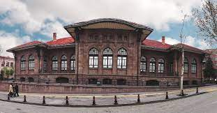

Meclis Tanıtım Sayfasına Hoşgeldiniz |
| Türkiye Büyük Millet Meclisi, Temsil Heyeti adına Mustafa Kemal Paşa'nın
21 Nisan 1920'de yayımladığı tamim gereğince; Hacı Bayram-ı Veli Camii'nde kılınan cuma namazını takiben dualar eşliğinde
kurbanların kesilmesinin ardından coşkulu bir törenle 23 Nisan 1920'de açılmıştır. Türkiye Büyük Millet Meclisi ilk gün 115 temsilci ile toplanmış ve açış konuşmasını en yaşlı üye sıfatı ile geçici başkanlık görevini üstlenen Sinop Milletvekili Şerif Bey yapmıştır. Meclisin 24 Nisan 1920'de yapılan ikinci toplantısında Mustafa Kemal Paşa oy birliği ile Meclis Başkanlığına seçilmiştir. |
|  |
 |
 E-Devlet | |

Türkiye |
Büyük Millet Meclisi |